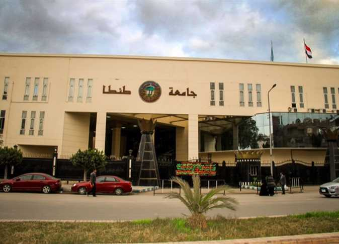

مثل العام 1972 عتبة فارقة في تاريخ جامعة طنطا بصدور القانون رقم 49 لسنة 1972 والذي نص في فقرته (أ.هـ) على إنشاء جامعة وسط الدلتا بطنطا ثم عدل الاسم لاحقاً عام 1973 ليصبح جامعة طنطا وبذلك تصبح خامس جامعة في جمهورية مصر العربية بعد جامعات القاهرة والإسكندرية وعين شمس وأسيوط
توالى تأسيس كليات الجامعة حتى بلغ عددها 18 كلية منها 12 بمدينة طنطا و6 بفرع الجامعة بكفر الشيخ، حيث أنشئت كلية التجارة عام 1973
انفصلت جامعة المنوفية كما أنشئت كلية الآداب في نفس العام
أنشئت كليات الصيدلة وطب الأسنان والهندسة عام 1976، كلية التربية فرع كفر الشيخ عام 1977.
أنشئت كلية الحقوق عام 1980
أنشئت كلية التربية النوعية عام 1989 والتي كانت تابعة لوزارة التربية والتعليم ولكنها انضمت لجامعة طنطا بالقرار الجمهوري رقم 329 لسنة 1998، كما بدأت الدراسة بكلية الهندسة عام 1991 كما أنشئ فرع نفس الكلية وفرع كلية التجارة بكفر الشيخ في نفس العام
أنشئت كلية الزراعة وفرع كلية الآداب بكفر الشيخ عام 1993، كما أنشئت كلية التربية الرياضية عام 1994 وبدأت الدراسة بالفصول الدراسية بكلية التربية الرياضية بفرع الجامعة بكفر الشيخ عام 1997.
في 29/4/2000 تم تحويل المعهد العالي للتمريض بطنطا إلى كلية التمريض بطنطا وإضافتها إلى كليات التمريض بمصر
انفصل فرع كفر الشيخ عن جامعة طنطا في أغسطس 2006 تحت اسم جامعة كفر الشيخ حيث لعبت جامعة طنطا الدور المحوري والأساسي في إنشاء هذه الجامعة الوليدة. يبلغ عدد كليات الجامعة حالياً 13 كلية ومعهداً فنياً يتبعها 28 وحدة ذات طابع خاص
شعارها
شعار الجامعة عبارة عن نصفى العلم المصرى والعلم البريطانى؛ دلالة على الربط بين المكان وأسلوب (نمط) التعليم في الجامعة كما يُعبر عن الرابط بين الثقافتين الشرقية والغربية كأسلوب للتعليم والتعامل داخل الحرم الجامعى
حقائق سريعة عن جامعة طنطا
تاريخ إنشاء الجامعة 1972/1973
موقع الجامعة شارع الجيش(البحر سابقا) - مدينة طنطا - محافظة الغربية - جمهورية مصر العربية
عدد الكليات 13 كلية + معهد فني (سنتين)
التسجيل (2007/2008) طلاب مرحلة البكالوريوس أو الليسانس 96469 طلاب الدراسات العليا 5817
إجمالي الطلاب المسجلين 102286
القوى العاملة في 30/6/2008 أعضاء هيئة التدريس بالكليات 2025 الهيئة المعاونة بالكليات 1347 الإداريين بإدارة الجامعة والكليات 9057
إجمالي القوى العاملة 12429
الأقسام العلمية بالكليات 131
المقررات الدراسية بالكليات 2686
الكتب والرسائل العلمية بالمكتبة المركزية ومكتبات الكليات في 30/6/2008
الكتب العربية المشتراة 172594 الكتب العربية المهداة 5050 الكتب الأجنبية المشتراة 112543 الكتب الأجنبية المهداة 11335 الدوريات العلمية 10718 الرسائل العلمية 20307
رؤيه الجامعه
تسعى جامعه طنطا الى التميز محليا واقليميا وان تكون في مجالات التعليم والتعلم والبحث العلمي وخدمه المجتمع وتنميه البيئه
رساله الجامعه
تحرص جامعه طنطا على بناء اكادميه فاعله من خلال التطوير المستمر للبرامج الاكادميه للعديد من التخصصات في ضوء متطلبات خطط التنميه وتلبيه احتياجات الطلاب العرفه والمهاريه في اطار من قيم المجتمع وتقاليد وكذا اتاحه فرصه التعليم والتنميه المهنيه للخرجين في شتى القطاعات لتواكب التقدم وتحقق طموحات سوق العمل .كما تتعهد الجامعه بتوفير مقومات الابداع في مختلف مجالات البحث العلمي المنهجي الجاد لتطوير العلوم المعرفه والتنميه المستديمه وحل المشكلات المجتمعيه